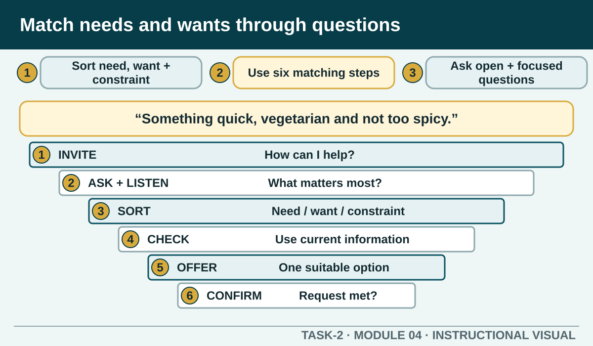

Prior learning
Students can use customer contexts as prompts for questions rather than assumptions.
Task 2 · Lesson 4 of 8
Distinguish requirements from preferences and use a six-step, source-safe conversation to match an authorised product or service.
Prior learning
Students can use customer contexts as prompts for questions rather than assumptions.
Success criteria
Learning boundary
This lesson supports preparation and formative practice. The current authorised package and trainer/assessor control formal products, observations, dates and submission.

A need is a requirement the service must meet for the option to be suitable. A want is a preference that shapes the customer's choice. A constraint is a limit such as time, stated budget, availability, accessibility or an instruction controlled by policy.
The same feature can sit in a different category for different customers. A quiet table may be a preference for one person and an access need for another. The worker should not decide the category from appearance; ask what is required and record only what is needed for the service.
The matching worksheet asks students to explain six steps but leaves the answer unfinished. The following sequence is a teaching synthesis from the authorised needs, standards, order and product material. It is designed for practice and must sit beside any local procedure.
An open question gathers the customer's goal: 'What would suit you today?' A focused question fills a gap: 'How much time do you have?' A confirming question closes the loop: 'So you need a quick option, would prefer something warm and have asked us to check the ingredient information—is that correct?'
Questions should have a purpose. Do not collect personal details simply because they may be interesting. Ask only what helps provide the authorised service.
Worked Example
Active listening is more than staying quiet. A worker shows listening by identifying key words, asking about ambiguity and repeating the important requirement in their own words. Confirmation gives the customer a chance to correct the record before production or booking begins.
Do not paraphrase away a critical detail. A modification, access need or food-safety concern should be recorded and repeated through the authorised process using clear language.
A good match uses current information about the product or service. If availability, price, ingredients, booking conditions or timing is uncertain, the worker should check rather than create an answer. The customer may decide that no available option meets the need, and that is better than a confident but inaccurate recommendation.
For food-safety or allergy questions, record the request and follow the authorised process. Do not rely on a generic practice card as proof that a product is safe.
A mismatch may occur because the requirement was not asked, was recorded incorrectly, changed or could not be met. Start by clarifying what the customer expected and what was delivered. Avoid arguing about who caused the misunderstanding.
Then use current product information and authority to explain the next option. If the matter is outside your role or involves a safety concern, escalate with an accurate handover.
Worked Example
Formative practice
Each option explains the workplace consequence. These responses save on this device.
Written application
Do not name a local product unless the current menu is provided. You can describe the features the matched option would need.
Self-checkApply and keep evidence
Match a customer's stated need to a respectful clarifying question and a suitable service response.
Use the check result, activity record and written response as formative learning evidence only. Formal evidence remains controlled by the current package and trainer/assessor.
Authorised source note: Grounded in T2-S01, T2-S05 and T2-S04. The six-step sequence is an explicit teaching synthesis because the source worksheet leaves that answer unfinished.